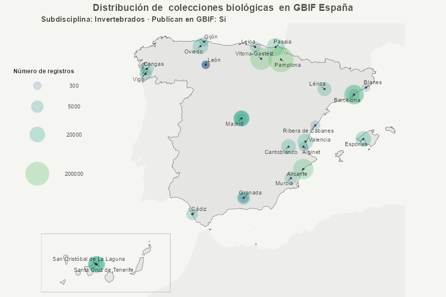
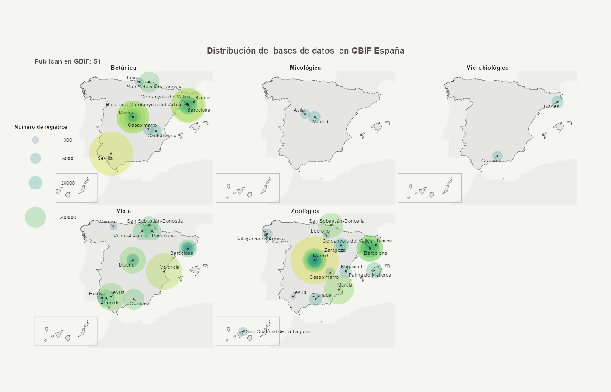

Repositorio de uso interno para leer, analizar y actualizar el Registro de Instituciones, colecciones y bases de datos de biodiversidad de GBIF España
Descripción
Este toolkit de uso interno proporciona un conjunto de herramientas en R y SQL (incluyendo el paquete de R metagesToolkit) para gestionar y analizar MetaGES, la base de datos del Registro de Colecciones de GBIF.ES.
El paquete permite:
- 🔍 Extraer información directamente desde la base de datos MetaGES,
- 📊 Procesar y resumir los datos (incluyendo generación de mapas temáticos),
- 📝 Producir informes técnicos reproducibles en formato Word.
El paquete asume un entorno de trabajo controlado y acceso autorizado a MetaGES. No está pensado como paquete de uso general.
Instalación
El paquete se instala directamente desde GitHub:
# install.packages("remotes")
remotes::install_github("GBIFes/metages-toolkit")
# Para desarrollo local del paquete se recomienda utilizar `devtools`, pero no es necesario para su uso normal.
# install.packages("devtools")
# devtools::install_github("GBIFes/metages-toolkit")Uso
Actualmente, el flujo principal del paquete se articula en torno a la función render_informe(), que orquesta internamente la conexión a MetaGES, la extracción de datos, el procesamiento, la creación de mapas y la generación de un informe final como archivo .docx.
El paquete expone además dos funciones útiles para la exploración crear_mapa_simple() y el post-procesado del informe insertar_tabla_colecciones(). Sin embargo, para usar estas funciones es imprescindible tener credenciales para acceder a MetaGES:
⚠️Añadir credenciales:⚠️
Para extraer datos de MetaGES es necesario tener acceso a la Base de Datos. Los siguientes variables de entorno deben estar definidas en el archivo .Renviron antes de usar el paquete; y se cargarán automáticamente al iniciar una sesión de R:
host_prodkeyfileprod_ssh_bridge_RDatabaseUIDgbif_wp_pass
Instrucciones para editar y guardar credenciales
Generar informe
Genera un archivo .docx en el working directory actual basado en Informe Quarto.
El informe contiene información detallada sobre el contenido de la base de datos MetaGES
# Función principal del paquete. Ejecuta el flujo completo de trabajo: conexión a MetaGES, extracción y procesamiento de datos, generación de mapas y renderizado del informe base.
# Genera `informe.docx`
render_informe()
# Función de post-procesado que añade tablas adicionales al documento generado por `render_informe()`.
# Genera `informe_con_tablas_colecciones.docx`. `keyword` debe coincidir con una Sección existente de informe.docx.
insertar_tabla_colecciones(keyword = "Anexo X") Crear mapas
Genera un mapa a partir de los datos procesados.
Permite filtrar por tipo_coleccion, disciplina, subdisciplina y si publican en GBIF o no. Además, permite hacer un facet con cualquier columna de la tabla de datos.
👉 Consulta el artículo Creación de mapas de colecciones con metagesToolkit
- Mapa de las colecciones de invertebrados publicadoras
crear_mapa_simple(tipo_coleccion = "coleccion",
subdisciplina = "Invertebrados",
publican = TRUE)$plot
- Mapa de las bases de datos publicadoras faceteado por disciplina
crear_mapa_simple(tipo_coleccion = "base de datos",
facet = "disciplina_def",
publican = TRUE)$plot 
Estructura del repositorio
El repositorio combina código del paquete R con recursos auxiliares necesarios para la exploración de MetaGES y para la generación del informe.
metages-toolkit/
├── codecov.yml
├── DESCRIPTION : Descripción del paquete de R metagesToolkit.
├── inst/
│ ├── reports/ : Materiales para generar el informe de colecciones.
│ │ ├── assets/ : Imágenes y plantillas para el informe.
│ │ │ ├── images/
│ │ │ │ ├── external/
│ │ │ │ │
│ │ │ │ ├── generated/ : Contiene imagenes autogeneradas por inst/scripts/actualizar_mapas_vignettes.R para ser usadas por informe.qmd
│ │ │ │ │
│ │ │ │ └── logos/
│ │ │ │
│ │ │ └── templates/
│ │ │ └── reference.docx
│ │ │
│ │ ├── data/ : Contiene carpetas autogeneradas por inst/scripts/actualizar_mapas_vignettes.R
│ │ │ ├── mapas/ : Contiene objetos .rds con la tabla de datos que genera cada mapa del informe y las vignettes
│ │ │ └── vistas_sql/ : Contiene objetos .rds con la tabla de datos que genera cada vista SQL de MetaGES
│ │ │
│ │ └── informe.qmd : Documento Quarto que genera el informe de colecciones usando las funciones del paquete de R metagesToolkit.
│ └── scripts/ : R Scripts de apoyo a la gestión de la base de datos MetaGES, del paquete de R metagesToolkit y para almacenar funciones que aun no han sido añadidas al paquete de R.
│ ├── actualizar_SQL_scripts.R
│ ├── actualizar_Renviron.R
│ ├── usage.R
│ ├── ...
│
├── LICENSE : Licencia de uso del repositorio.
├── man/ : Documentación de las funciones del paquete de R.
│
├── metagesToolkit.Rproj : Archivo del proyecto de RStudio.
├── NAMESPACE : Define que dependencias se importan y exportan al usar el paquete de R.
├── R/ : Funciones que forman parte del paquete de R.
│ ├── conectar_metages.R : Función para conectar R a MetaGES
│ ├── extraer_colecciones_mapa.R : Función para extraer datos de colecciones de MetaGES. Usa conectar_metages.R
│ ├── crear_mapa.R : Funcion compleja para crear mapas con los datos de extraer_colecciones_mapa.R
│ ├── crear_mapa_simple.R : Wrapper simplificado de crear_mapa.R. Opción recomendada para crear mapas.
│ ├── render_informe.R : Crea una carpeta con el contenido del output de informe.qmd
│ ├── insertar_tabla_colecciones.R : Añade la gran tabla final al output de render_informe.R, generando informe_con_tablas_colecciones.docx
│ ├── ...
│
├── README.md : Descripción del repositorio.
├── sql/ : Scripts generados automaticamente por actualizar_SQL_scripts.R para guardar la documentacion de las Vistas y otros Scripts de MetaGES.
│ ├── LEEME
│ └── scripts/
│ ├── colecciones_per_estado_publicacion.sql
│ ├── colecciones_informatizacion_ejemplares.sql
│ ├── colecciones_per_anno.sql
│ ├── contactos_entidades.sql
│ ├── ...
│
├── vignettes/
│ └── crear-mapas.Rmd : Markdown para crear un articulo en github pages (https://gbifes.github.io/metages-toolkit/articles/crear-mapas.html)
│
├── docs/ : Documentos necesarios para crear la github page del repo (https://gbifes.github.io/metages-toolkit/index.html)
│
├── pkgdown/
│ └── assets/pkgnet-report.hmtl : Análisis de la arquitectura de metagesToolkit realizado por inst/scripts/actualizar_pkgnet_arquitectura.R
│
└── tests/ : Tests para las funciones del paquete de R metagesToolkit
├── testthat/
│
└── testthat.R